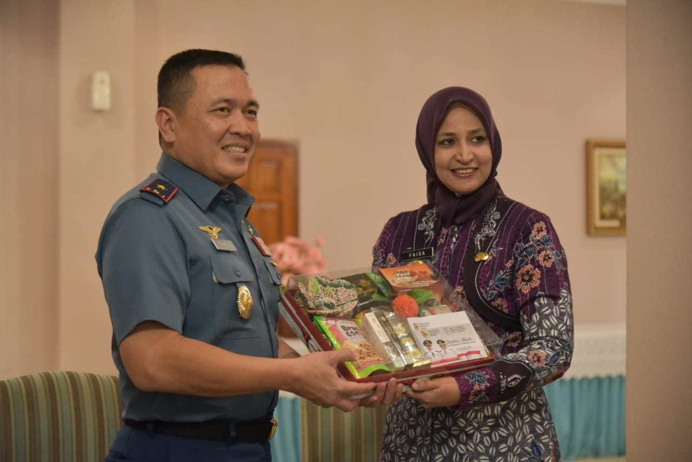

Lomba Dayung
Bakal Gelar Lomba Dayung Tingkat Nasional
Pemerintah Kabupaten Jember dan Lantamal V serius mengembangkan potensi bahari yang dimiliki oleh Bumi Pandhalungan.
Setelah survei di Pantai Papumda dan Payangan, keyakinan untuk mengembangkan potensi tersebut semakin mantap.
Beberapa agenda kegiatan telah disepakati untuk dilaksanakan pada tahun 2019. Seperti lomba dayung, yang direncanakan pada awal tahun.
Bupati Jember dr. Hj. Faida, MMR., yang memimpin rombongan tim survei mengatakan, pada tahun 2019 pembangunan Kabupaten Jember memprioritaskan Jember Kota Wisata Berbudaya.
Lomba dayung tersebut menjadi salah satu potensi yang bisa menarik animo masyarakat berwisata, baik masyarakat domestik maupun manca negara.
“Kita tadi survei untuk kemungkinan kita menyelenggarakan lomba dayung nasional di Jember. Ini menarik sekali, menjadi satu tantangan,” katanya.
Bupati yakin rencana tersebut tercapai dan berjalan sukses dengan kerjasama yang baik antara Lantamal dan masyarakat setempat.
Sementara itu, Komandan Lantamal V Laksmana Pertama TNI Edwin, SH mengatakan, setelah melakukan survei, tim melihat beberapa spot yang bisa dipakai untuk lomba dayung.
“Di teluk love ini,” katanya saat di Pantai Payangan, Kamis 1 November 2018. Pada awal tahun 2019 akan melakukan kegiatan persiapan penyelenggaraan lomba tersebut.
Lomba dayung ini untuk memberikan edukasi kepada masyarakat tentang potensi yang dimilikinya. Selain itu untuk menarik wisatawan, serta sebagai pembinaan sportifitas kepada generasi muda.
Menurut Danlantamal, lomba dayung dan beberapa kegiatan yang telah direncanakan bersama Pemkab Jember memiliki muara untuk mencerdaskan dan menyejahterakan masyarakat.
“Kita sedang menata pola-pola pembinaan untuk peningkatan kualitas hidup nelayan. Kegiatan-kegiatan ini bermuara pada mencerdaskan dan menyejahterakan masyarakat,” terangnya.
Sinergisitas Pemkab Jember dengan Lantamal V juga mencakup pembinaan pramuka, yang akan mengembangkan Saka Bahari.